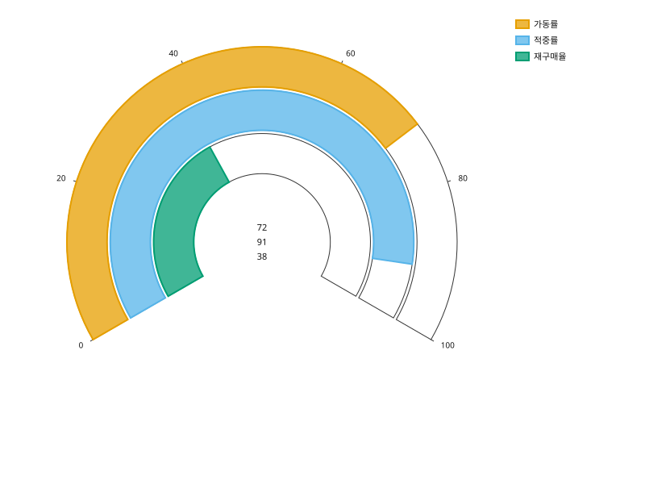

gaugeplot
값 하나가 범위 안에서 어디쯤인지를 240도 아크의 채운 길이로 나타낸다.
- 데이터
- value: 수치(비유한 값 거부) · labels(선택): 아크 이름 · vmin/vmax(선택): 범위
데이터
import svgplot as sp
KPI = {
"지표": ["가동률", "적중률", "재구매율"],
"값": [72.0, 91.0, 38.0],
}
예시
기본 — 행 하나면 범례도 없다
ONE = {"지표": ["가동률"], "값": [72.0]}
sp.gaugeplot(ONE, value="값", labels="지표", vmin=0.0, vmax=100.0)
여러 행은 하나의 범위를 공유하는 동심 아크가 된다

sp.gaugeplot(KPI, value="값", labels="지표", vmin=0.0, vmax=100.0)
vmin=/vmax= 를 주지 않으면 데이터에서 범위를 잡는다
sp.gaugeplot(KPI, value="값", labels="지표")
메모
- 한 행이 아크 하나이고 바깥쪽부터 그린다. 모든 아크가 같은 범위를 쓰므로 길이끼리 견줘진다.
- 범위 밖 값은 양 끝으로 클램핑된다. 감아 돌게 두면 vmax 를 넘은 큰 값이 더 작은 아크로 그려져 데이터를 뒤집어 보이게 된다.
- 링이 3px 보다 얇아질 만큼 행이 많으면 거부한다. 그보다 얇은 링은 서로 구별되지 않는다.
- vmin >= vmax 를 거부하고, 비유한 경계나 넘치는 범위도 거부한다.
- 16종 중 데이터 모델이 비교가 아니라 스칼라인 유일한 차트다. 그래서 x/y 채널 대신 value 컬럼 하나를 받는다.